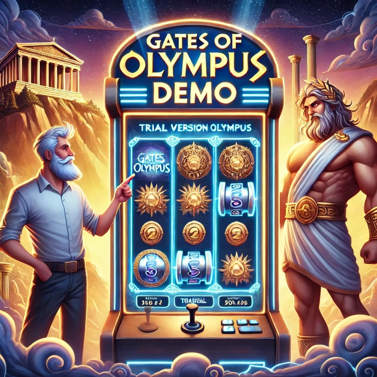
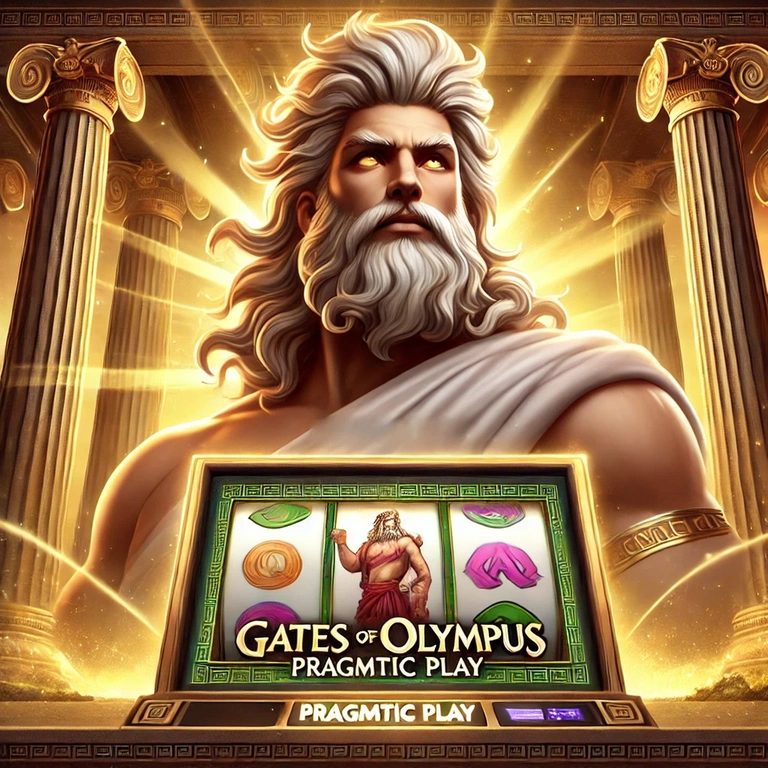
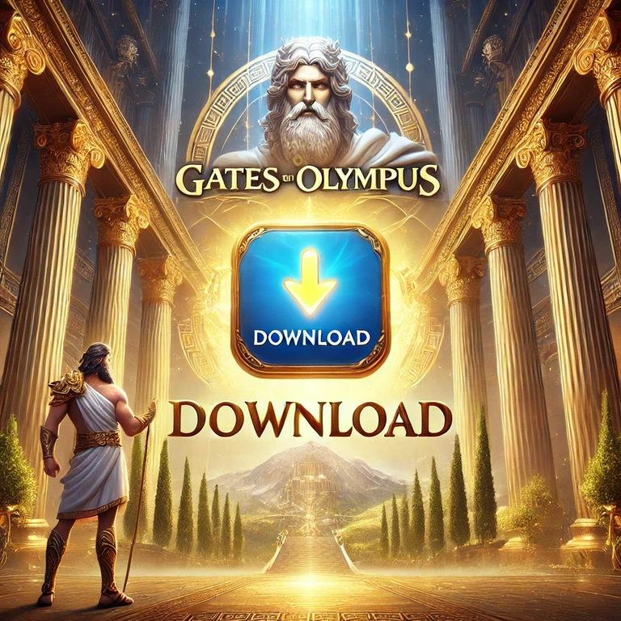

Play Gates of Olympus
Step into the mythical realm of Olympus, where the mighty Zeus rules over the reels in Gates of Olympus, a thrilling slot game by Pragmatic Play. This high-volatility game takes players on an epic journey filled with cascading wins, powerful multipliers, and free spins. Unlike traditional slots, it features a unique Pay Anywhere mechanic, meaning winning combinations can land anywhere on the grid, not just on specific paylines.
With stunning visuals, immersive sound effects, and engaging gameplay, this game offers an exciting and rewarding experience. Whether you're a seasoned slot player or a newcomer, Gates of Olympus delivers fast-paced action and the potential for massive wins, making it one of the most popular games in the online casino world.
What is Gates of Olympus? Basic Game Details

The Gates of Olympus slot is played on a 6x5 grid, featuring ancient Greek-themed symbols such as crowns, rings, goblets, gemstones, and, of course, Zeus himself. The most exciting aspect of this game is its multiplier system, where players can land random multipliers ranging from 2x to an astonishing 500x, boosting their payouts significantly.
Another major highlight of this slot is its Tumble feature, which removes winning symbols and replaces them with new ones, allowing for multiple consecutive wins on a single spin. Combined with free spins, powerful multipliers, and engaging bonus rounds, this slot offers high volatility gameplay, meaning massive rewards but also significant risks.
With an RTP (Return to Player) of 96.5%, Gates of Olympus is an excellent choice for players looking for high-stakes action and thrilling gameplay.
Gates of Olympus Play for Free
For players who want to dive into the world of Gates of Olympus without any financial risk, the game is available in free-play mode. This option allows users to enjoy the full gameplay experience without needing to register, make a deposit, or place real-money bets. The demo version is designed for both beginners and experienced players who want to explore the game’s mechanics, test different betting strategies, and understand the gameplay flow before playing with real money.
What to Expect in Free-Play Mode?
The free version of Gates of Olympus includes all the essential features of the paid game, ensuring an authentic experience without any cost. Players can enjoy:
-
Tumble Mechanic - Winning symbols disappear, allowing new ones to drop in and create additional winning combinations.
-
Pay Anywhere System - Wins are not restricted by paylines, meaning symbols can land anywhere on the reels to form payouts.
-
Random Multipliers - Zeus can randomly award multipliers from 2x to 500x, significantly boosting potential winnings.
-
Free Spins Bonus - Trigger the free spins round and experience the full excitement of the game, just like in real-money mode.
-
HD Graphics & Immersive Sound- Enjoy the stunning visuals and epic soundtrack that bring Olympus to life.
Why Play Gates of Olympus for Free?
The free-play mode offers several advantages:
-
No Financial Risk - Players can spin the reels without worrying about losses.
-
Unlimited Play - The demo mode allows unlimited sessions, so you can practice as much as you want.
-
Learn the Game Mechanics - A perfect way to understand how the symbols, multipliers, and bonus features work.
-
Test Strategies - Experiment with different betting approaches to find the most effective strategy for real-money play.
-
HD Graphics & Immersive Sound - Enjoy the stunning visuals and epic soundtrack that bring Olympus to life.
How to Play for Free?
The free-play mode offers several advantages:
-
Visit an online casino that offers Gates of Olympus in demo mode.
-
Click on the "Play for Free" or "Demo" button.
-
The game will load with virtual credits, allowing unlimited spins without the need for deposits.
-
Explore all the features, trigger bonus rounds, and enjoy the thrilling gameplay risk-free.
When to Switch to Real Money Play?
Once you feel comfortable with the game mechanics and betting strategies, you can transition to real-money mode to experience the full excitement of chasing big wins. With an RTP of 96.5% and high volatility, Gates of Olympus offers massive payout potential, especially with its powerful multipliers.
Whether you’re new to slots or an experienced player looking for risk-free practice, the free-play version of Gates of Olympus is the perfect way to get started. Spin the reels, experiment with different strategies, and prepare for Olympian-sized wins when you're ready to play for real!
Gates of Olympus Demo

The Gates of Olympus Demo version is an excellent way for players to familiarize themselves with the slot’s mechanics. Unlike many other games that require an account, most online casinos offer instant demo play, allowing users to spin the reels with virtual currency instead of real money.
In the demo mode, you can:
-
Test out the Pay Anywhere mechanic
-
Experience the Tumble feature
-
Trigger free spins and multipliers
-
Develop a betting strategy without financial risk
The demo version ensures that players can explore all the thrilling features, bonus rounds, and high-payout potential of the game before deciding to play for real money.
Gates of Olympus Pragmatic Play

Gates of Olympus is a masterpiece created by Pragmatic Play, one of the leading software developers in the online casino industry. Known for producing high-quality slots with innovative mechanics and captivating designs, Pragmatic Play ensures that every spin in this game is packed with excitement.
With an impressive RTP of 96.5%, this game offers fair and balanced gameplay, giving players a decent chance to land substantial wins. As a high-volatility slot, it appeals to risk-takers looking for huge payouts, thanks to its 500x multipliers, cascading wins, and engaging free spins mode .
The game is available across multiple platforms, including desktop, mobile, and tablets , ensuring seamless gameplay for all users. Whether you’re playing for fun or aiming for massive wins, Gates of Olympus by Pragmatic Play is a slot worth experiencing.
Gates of Olympus Download

Want to take Gates of Olympus with you wherever you go? The game is fully optimized for mobile devices and can be played on Android, iOS, and Windows. Players can either download the game via casino apps or play it directly through a web browser without installing any additional software.
-
📲 Smooth and optimized mobile gameplay
-
🎮 Instant access to all features, including free spins and bonuses
-
⚡ Fast and lag-free performance on mobile devices
-
🖥️ Compatible with both mobile and desktop platforms
For those who prefer playing on the go, downloading Gates of Olympus ensures a high-quality gaming experience with crisp graphics, responsive controls, and immersive sound effects .